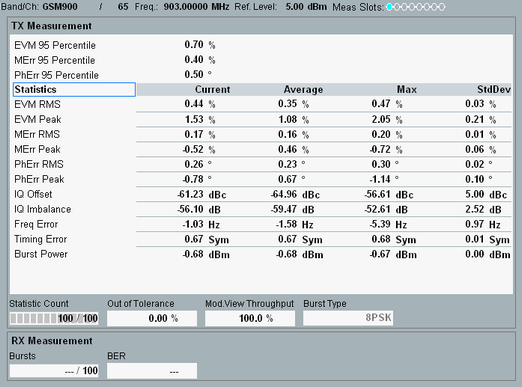

TX Measurement Scalar and BER
The "TX Measurement Scalar" or "BER" dialogs contain tables of statistical results for the TX and RX measurements.

GSM multi-evaluation: TX measurement scalar
The TX measurement table consists of two sections:
- 95 percentile
Value of the measured quantity below which 95 % of all observations fall. An EVM 95th percentile of 0.8 indicates that 95 % of all measured EVM results were below 0.8, 5 % equal to or larger than 0.8. - Statistics table
– Error vector magnitude (EVM): calculated percentage of vector error (RMS and peak) between the received signal and an ideal signal. – Magnitude error: difference in amplitude (RMS and peak) between the received signal waveform and an ideal signal waveform. – Phase error: phase difference (RMS and peak) of the I/Q components of the signal received from the MS and an ideal reference signal at the detection points. – I/Q offset: estimated from the distribution of the constellation points. – I/Q imbalance: the amplitude ratio between the I and Q components of the signal. – Frequency error: the difference between the nominal frequency of the selected channel and the measured frequency. – Timing error: Difference between the actual timing of the slot and the expected timing. The actual timing is given by the training sequence. The expected timing is derived from the detected frame timing, therefore the "Timing Error" measurement requires an internal trigger ("Trigger Source" = "Power" or "Acquisition"). – Burst power: Average burst power, evaluated over the useful part of the burst (see 3GPP TS 51.010-1). – AM PM delay: Time delay of the amplitude vs. time trajectory of the baseband modulation vector relative to the phase vs. time trajectory that is needed to minimize the modulation errors (EVM). The AM PM delay is a characteristic quantity for polar modulation schemes which uses polar coordinates (amplitude and phase) rather than Cartesian coordinates (I and Q amplitudes).
For additional screen elements, refer to "Common View Elements".
The RX measurement panel displays the progress and result of the bit error rate test, see "GSM RX Tests".
- Bursts
Progress bar of the measurement. - BER
Measured bit error rate: The percentage of bits that the DUT received in error.
See also: "Modulation Accuracy"
For query of the results via remote control, see "Measurement Results".